The Variational Principle
When Prof. Kivelson walked into class today, he looked a bit taken by surprise. He just kind of stood there for a bit and stared at everyone who stared back at him. There was a funny look on his face, like, ‘‘Oh, you're expecting me to teach you something?’’ Well, yes, we would like you to teach us some statistical mechanics!
In class, we spent way too much time proving the variational principle, and not enough time explaining what it actually means. Honestly, it's much more important to understand the logic behind a variational argument than to know how to prove it…so of all the sections on this page, the Motivation and Overview section is most important. (I don't even know if I'll get around to writing the rest of the sections…I have a life too, you know!)
Outline
Motivation and Summary
One of the key points today is that interacting systems are very difficult to solve in general. The variational principle is a useful tool to have in our pocket because it lets us leverage the Hamiltonians which we actually can solve to solve Hamiltonians which we can't.
The strategy of the variational principle is to use a problem we can solve to approximate a problem we can't.
More preciesly, suppose we want to solve a hard system with a Hamiltonian  . Our plan of attack is to approximate it with a different ‘‘trial Hamiltonian’’
. Our plan of attack is to approximate it with a different ‘‘trial Hamiltonian’’  which has the same general ‘‘flavor’’ as the actual Hamiltonian, but (in contrast) is actually solvable. You could also call a different name such as a ‘‘variational ansatz’’ or a ‘‘guess of the solution shape’’ or even ‘‘a random shot in the dark.’’ The main point is that the the trial Hamiltonian should be a solvable problem that's similar to the actual problem at hand.
which has the same general ‘‘flavor’’ as the actual Hamiltonian, but (in contrast) is actually solvable. You could also call a different name such as a ‘‘variational ansatz’’ or a ‘‘guess of the solution shape’’ or even ‘‘a random shot in the dark.’’ The main point is that the the trial Hamiltonian should be a solvable problem that's similar to the actual problem at hand.
But we don't care about the trial Hamiltonian – we care about the actual hamiltornian . So a natural question to ask is, ‘‘what's our best guess for the free energy of the actual system’’?
The variational principle tells us that:
1. Our best guess for the actual free energy is given by the variational free energy  , which you can find by adding a little correction to the trial Hamiltonian's free energy
, which you can find by adding a little correction to the trial Hamiltonian's free energy  :
:
2. No matter how good a guess your variational free energy is, it will always be greater than or equal to the actual free energy  ; that is,
; that is,
3. The best variational solution we can find is the one that gets as close as possible to the actual Hamiltonian.
A quick comment about notation: When we write 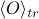 it means that we're considering the average of some observable O in the trial ensemble; that is, it answers the question ‘‘what would the average of O be if the system were actually the trial Hamiltonian?’’ Operationally, is calculated using the probability weights of the trial Hamiltonian, by calculating
(Notice the subscript ‘‘tr’’ on the partition function and Hamiltonian here.)
Minimizing the variational free energy
The key point of the variational principle is that our best guess is the one with the smallest variational free energy . Practically speaking, our strategy is to start with a whole family of possible trial Hamiltonians, and then just pick the one whose variational free energy is the smallest.
For instance, our family of trial Hamiltonians might be all possible 2D Ising models
where we can pick the parameters and  that enter into the Hamiltonian. We have a lot of choices; picking and gives us one possible trial Hamiltonian; picking 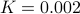 and 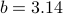 gives us another possibility, etc., and the variational principle tells us that our best guess for and is the choice that minimizes .
that enter into the Hamiltonian. We have a lot of choices; picking and gives us one possible trial Hamiltonian; picking 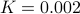 and 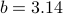 gives us another possibility, etc., and the variational principle tells us that our best guess for and is the choice that minimizes .
In the picture below, I've illustrated my point. There's a whole bunch of different 's that we can pick, and our best choice is 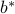 because it minimizes .
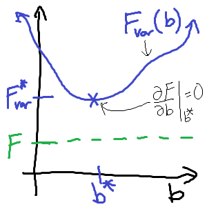
Here I've plotted how depends on the parameter in the trial Hamiltonian. (I've left out the parameter for simplicity). Notice that no matter what I choose for the parameter, the variational free energy is always bigger than the actual free energy . And my best guess for is the one that makes as close to possible.
Okay I think I've nailed the point into the floor enough by now. Operationally, here are the steps to apply the variational principle:
First, solve the thermodynamics of the trial Hamiltonian
by finding 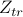, , , and whatever else you need.Next, calculate the variational free energy
 .
.Finally, minimize the variational free energy by setting its derivative w.r.t. the variational parameters equal to zero. So if our trial Hamiltonian 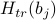 depends on parameters
 , then we should set 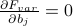 and then solve for the parameters .
, then we should set 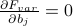 and then solve for the parameters .
Hooray, we've learned the variational principle. I'm not sure if I'll get around to finishing up the rest of this page…for now just go on to the next page about non-interacting spins.